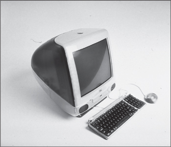

THE iMAC
Hello (Again)

The first great design triumph to come from the Jobs-Ive collaboration was the iMac, a desktop computer aimed at the home consumer market that was introduced in May 1998. Jobs had certain specifications. It should be an all-in-one product, with keyboard and monitor and computer ready to use right out of the box. It should have a distinctive design that made a brand statement. And it should sell for $1,200 or so. (Apple had no computer selling for less than $2,000 at the time.) "He told us to go back to the roots of the original 1984 Macintosh, an all-in-one consumer appliance," recalled Schiller. "That meant design and engineering had to work together."
The initial plan was to build a "network computer," a concept championed by Oracle's Larry Ellison, which was an inexpensive terminal without a hard drive that would mainly be used to connect to the Internet and other networks. But Apple's chief financial officer Fred Anderson led the push to make the product more robust by adding a disk drive so it could become a full-fledged desktop computer for the home. Jobs eventually agreed.
Jon Rubinstein, who was in charge of hardware, adapted the microprocessor and guts of the PowerMac G3, Apple's high-end professional computer, for use in the proposed new machine. It would have a hard drive and a tray for compact disks, but in a rather bold move, Jobs and Rubinstein decided not to include the usual floppy disk drive. Jobs quoted the hockey star Wayne Gretzky's maxim, "Skate where the puck's going, not where it's been." He was a bit ahead of his time, but eventually most computers eliminated floppy disks.
Ive and his top deputy, Danny Coster, began to sketch out futuristic designs. Jobs brusquely rejected the dozen foam models they initially produced, but Ive knew how to guide him gently. Ive agreed that none of them was quite right, but he pointed out one that had promise. It was curved, playful looking, and did not seem like an unmovable slab rooted to the table. "It has a sense that it's just arrived on your desktop or it's just about to hop off and go somewhere," he told Jobs.
By the next showing Ive had refined the playful model. This time Jobs, with his binary view of the world, raved that he loved it. He took the foam prototype and began carrying it around the headquarters with him, showing it in confidence to trusted lieutenants and board members. In its ads Apple was celebrating the glories of being able to think different, yet until now nothing had been proposed that was much different from existing computers. Finally, Jobs had something new.
The plastic casing that Ive and Coster proposed was sea-green blue, later named bondi blue after the color of the water at a beach in Australia, and it was translucent so that you could see through to the inside of the machine. "We were trying to convey a sense of the computer being changeable based on your needs, to be like a chameleon," said Ive. "That's why we liked the translucency. You could have color but it felt so unstatic. And it came across as cheeky."
Both metaphorically and in reality, the translucency connected the inner engineering of the computer to the outer design. Jobs had always insisted that the rows of chips on the circuit boards look neat, even though they would never be seen. Now they would be seen. The casing would make visible the care that had gone into making all components of the computer and fitting them together. The playful design would convey simplicity while also revealing the depths that true simplicity entails.
Even the simplicity of the plastic shell itself involved great complexity. Ive and his team worked with Apple's Korean manufacturers to perfect the process of making the cases, and they even went to a jelly bean factory to study how to make translucent colors look enticing. The cost of each case was more than $60 per unit, three times that of a regular computer case. Other companies would probably have demanded presentations and studies to show whether the translucent case would increase sales enough to justify the extra cost. Jobs asked for no such analysis.
Topping off the design was the handle nestled into the iMac. It was more playful and semiotic than it was functional. This was a desktop computer; not many people were really going to carry it around. But as Ive later explained:
Back then, people weren't comfortable with technology. If you're scared of something, then you won't touch it. I could see my mum being scared to touch it. So I thought, if there's this handle on it, it makes a relationship possible. It's approachable. It's intuitive. It gives you permission to touch. It gives a sense of its deference to you. Unfortunately, manufacturing a recessed handle costs a lot of money. At the old Apple, I would have lost the argument. What was really great about Steve is that he saw it and said, "That's cool!" I didn't explain all the thinking, but he intuitively got it. He just knew that it was part of the iMac's friendliness and playfulness.
Jobs had to fend off the objections of the manufacturing engineers, supported by Rubinstein, who tended to raise practical cost considerations when faced with Ive's aesthetic desires and various design whims. "When we took it to the engineers," Jobs said, "they came up with thirty-eight reasons they couldn't do it. And I said, ‘No, no, we're doing this.' And they said, ‘Well, why?' And I said, ‘Because I'm the CEO, and I think it can be done.' And so they kind of grudgingly did it."
Jobs asked Lee Clow and Ken Segall and others from the TBWA\Chiat\Day ad team to fly up to see what he had in the works. He brought them into the guarded design studio and dramatically unveiled Ive's translucent teardrop-shaped design, which looked like something from The Jetsons, the animated TV show set in the future. For a moment they were taken aback. "We were pretty shocked, but we couldn't be frank," Segall recalled. "We were really thinking, ‘Jesus, do they know what they are doing?' It was so radical." Jobs asked them to suggest names. Segall came back with five options, one of them "iMac." Jobs didn't like any of them at first, so Segall came up with another list a week later, but he said that the agency still preferred "iMac." Jobs replied, "I don't hate it this week, but I still don't like it." He tried silk-screening it on some of the prototypes, and the name grew on him. And thus it became the iMac.
As the deadline for completing the iMac drew near, Jobs's legendary temper reappeared in force, especially when he was confronting manufacturing issues. At one product review meeting, he learned that the process was going slowly. "He did one of his displays of awesome fury, and the fury was absolutely pure," recalled Ive. He went around the table assailing everyone, starting with Rubinstein. "You know we're trying to save the company here," he shouted, "and you guys are screwing it up!"
Like the original Macintosh team, the iMac crew staggered to completion just in time for the big announcement. But not before Jobs had one last explosion. When it came time to rehearse for the launch presentation, Rubinstein cobbled together two working prototypes. Jobs had not seen the final product before, and when he looked at it onstage he saw a button on the front, under the display. He pushed it and the CD tray opened. "What the fuck is this?!?" he asked, though not as politely. "None of us said anything," Schiller recalled, "because he obviously knew what a CD tray was." So Jobs continued to rail. It was supposed to have a clean CD slot, he insisted, referring to the elegant slot drives that were already to be found in upscale cars. "Steve, this is exactly the drive I showed you when we talked about the components," Rubinstein explained. "No, there was never a tray, just a slot," Jobs insisted. Rubinstein didn't back down. Jobs's fury didn't abate. "I almost started crying, because it was too late to do anything about it," Jobs later recalled.
They suspended the rehearsal, and for a while it seemed as if Jobs might cancel the entire product launch. "Ruby looked at me as if to say, ‘Am I crazy?'" Schiller recalled. "It was my first product launch with Steve and the first time I saw his mind-set of ‘If it's not right we're not launching it.'" Finally, they agreed to replace the tray with a slot drive for the next version of the iMac. "I'm only going to go ahead with the launch if you promise we're going to go to slot mode as soon as possible," Jobs said tearfully.
There was also a problem with the video he planned to show. In it, Jony Ive is shown describing his design thinking and asking, "What computer would the Jetsons have had? It was like, the future yesterday." At that moment there was a two-second snippet from the cartoon show, showing Jane Jetson looking at a video screen, followed by another two-second clip of the Jetsons giggling by a Christmas tree. At a rehearsal a production assistant told Jobs they would have to remove the clips because Hanna-Barbera had not given permission to use them. "Keep it in," Jobs barked at him. The assistant explained that there were rules against that. "I don't care," Jobs said. "We're using it." The clip stayed in.
Lee Clow was preparing a series of colorful magazine ads, and when he sent Jobs the page proofs he got an outraged phone call in response. The blue in the ad, Jobs insisted, was different from that of the iMac. "You guys don't know what you're doing!" Jobs shouted. "I'm going to get someone else to do the ads, because this is fucked up." Clow argued back. Compare them, he said. Jobs, who was not in the office, insisted he was right and continued to shout. Eventually Clow got him to sit down with the original photographs. "I finally proved to him that the blue was the blue was the blue." Years later, on a Steve Jobs discussion board on the website Gawker, the following tale appeared from someone who had worked at the Whole Foods store in Palo Alto a few blocks from Jobs's home: "I was shagging carts one afternoon when I saw this silver Mercedes parked in a handicapped spot. Steve Jobs was inside screaming at his car phone. This was right before the first iMac was unveiled and I'm pretty sure I could make out, ‘Not. Fucking. Blue. Enough!!!'"
As always, Jobs was compulsive in preparing for the dramatic unveiling. Having stopped one rehearsal because he was angry about the CD drive tray, he stretched out the other rehearsals to make sure the show would be stellar. He repeatedly went over the climactic moment when he would walk across the stage and proclaim, "Say hello to the new iMac." He wanted the lighting to be perfect so that the translucence of the new machine would be vivid. But after a few run-throughs he was still unsatisfied, an echo of his obsession with stage lighting that Sculley had witnessed at the rehearsals for the original 1984 Macintosh launch. He ordered the lights to be brighter and come on earlier, but that still didn't please him. So he jogged down the auditorium aisle and slouched into a center seat, draping his legs over the seat in front. "Let's keep doing it till we get it right, okay?" he said. They made another attempt. "No, no," Jobs complained. "This isn't working at all." The next time, the lights were bright enough, but they came on too late. "I'm getting tired of asking about this," Jobs growled. Finally, the iMac shone just right. "Oh! Right there! That's great!" Jobs yelled.
A year earlier Jobs had ousted Mike Markkula, his early mentor and partner, from the board. But he was so proud of what he had wrought with the new iMac, and so sentimental about its connection to the original Macintosh, that he invited Markkula to Cupertino for a private preview. Markkula was impressed. His only objection was to the new mouse that Ive had designed. It looked like a hockey puck, Markkula said, and people would hate it. Jobs disagreed, but Markkula was right. Otherwise the machine had turned out to be, as had its predecessor, insanely great.
With the launch of the original Macintosh in 1984, Jobs had created a new kind of theater: the product debut as an epochal event, climaxed by a let-there-be-light moment in which the skies part, a light shines down, the angels sing, and a chorus of the chosen faithful sings "Hallelujah." For the grand unveiling of the product that he hoped would save Apple and again transform personal computing, Jobs symbolically chose the Flint Auditorium of De Anza Community College in Cupertino, the same venue he had used in 1984. He would be pulling out all the stops in order to dispel doubts, rally the troops, enlist support in the developers' community, and jump-start the marketing of the new machine. But he was also doing it because he enjoyed playing impresario. Putting on a great show piqued his passions in the same way as putting out a great product.
Displaying his sentimental side, he began with a graceful shout-out to three people he had invited to be up front in the audience. He had become estranged from all of them, but now he wanted them rejoined. "I started the company with Steve Wozniak in my parents' garage, and Steve is here today," he said, pointing him out and prompting applause. "We were joined by Mike Markkula and soon after that our first president, Mike Scott," he continued. "Both of those folks are in the audience today. And none of us would be here without these three guys." His eyes misted for a moment as the applause again built. Also in the audience were Andy Hertzfeld and most of the original Mac team. Jobs gave them a smile. He believed he was about to do them proud.
After showing the grid of Apple's new product strategy and going through some slides about the new computer's performance, he was ready to unveil his new baby. "This is what computers look like today," he said as a picture of a beige set of boxy components and monitor was projected on the big screen behind him. "And I'd like to take the privilege of showing you what they are going to look like from today on." He pulled the cloth from the table at center stage to reveal the new iMac, which gleamed and sparkled as the lights came up on cue. He pressed the mouse, and as at the launch of the original Macintosh, the screen flashed with fast-paced images of all the wondrous things the computer could do. At the end, the word "hello" appeared in the same playful script that had adorned the 1984 Macintosh, this time with the word "again" below it in parentheses: Hello (again). There was thunderous applause. Jobs stood back and proudly gazed at his new Macintosh. "It looks like it's from another planet," he said, as the audience laughed. "A good planet. A planet with better designers."
Once again Jobs had produced an iconic new product, this one a harbinger of a new millennium. It fulfilled the promise of "Think Different." Instead of beige boxes and monitors with a welter of cables and a bulky setup manual, here was a friendly and spunky appliance, smooth to the touch and as pleasing to the eye as a robin's egg. You could grab its cute little handle and lift it out of the elegant white box and plug it right into a wall socket. People who had been afraid of computers now wanted one, and they wanted to put it in a room where others could admire and perhaps covet it. "A piece of hardware that blends sci-fi shimmer with the kitsch whimsy of a cocktail umbrella," Steven Levy wrote in Newsweek, "it is not only the coolest-looking computer introduced in years, but a chest-thumping statement that Silicon Valley's original dream company is no longer somnambulant." Forbes called it "an industry-altering success," and John Sculley later came out of exile to gush, "He has implemented the same simple strategy that made Apple so successful 15 years ago: make hit products and promote them with terrific marketing."
Carping was heard from only one familiar corner. As the iMac garnered kudos, Bill Gates assured a gathering of financial analysts visiting Microsoft that this would be a passing fad. "The one thing Apple's providing now is leadership in colors," Gates said as he pointed to a Windows-based PC that he jokingly had painted red. "It won't take long for us to catch up with that, I don't think." Jobs was furious, and he told a reporter that Gates, the man he had publicly decried for being completely devoid of taste, was clueless about what made the iMac so much more appealing than other computers. "The thing that our competitors are missing is that they think it's about fashion, and they think it's about surface appearance," he said. "They say, We'll slap a little color on this piece of junk computer, and we'll have one, too."
The iMac went on sale in August 1998 for $1,299. It sold 278,000 units in its first six weeks, and would sell 800,000 by the end of the year, making it the fastest-selling computer in Apple history. Most notably, 32% of the sales went to people who were buying a computer for the first time, and another 12% to people who had been using Windows machines.
Ive soon came up with four new juicy-looking colors, in addition to bondi blue, for the iMacs. Offering the same computer in five colors would of course create huge challenges for manufacturing, inventory, and distribution. At most companies, including even the old Apple, there would have been studies and meetings to look at the costs and benefits. But when Jobs looked at the new colors, he got totally psyched and summoned other executives over to the design studio. "We're going to do all sorts of colors!" he told them excitedly. When they left, Ive looked at his team in amazement. "In most places that decision would have taken months," Ive recalled. "Steve did it in a half hour."
There was one other important refinement that Jobs wanted for the iMac: getting rid of that detested CD tray. "I'd seen a slot-load drive on a very high-end Sony stereo," he said, "so I went to the drive manufacturers and got them to do a slot-load drive for us for the version of the iMac we did nine months later." Rubinstein tried to argue him out of the change. He predicted that new drives would come along that could burn music onto CDs rather than merely play them, and they would be available in tray form before they were made to work in slots. "If you go to slots, you will always be behind on the technology," Rubinstein argued.
"I don't care, that's what I want," Jobs snapped back. They were having lunch at a sushi bar in San Francisco, and Jobs insisted that they continue the conversation over a walk. "I want you to do the slot-load drive for me as a personal favor," Jobs asked. Rubinstein agreed, of course, but he turned out to be right. Panasonic came out with a CD drive that could rip and burn music, and it was available first for computers that had old-fashioned tray loaders. The effects of this would ripple over the next few years: It would cause Apple to be slow in catering to users who wanted to rip and burn their own music, but that would then force Apple to be imaginative and bold in finding a way to leapfrog over its competitors when Jobs finally realized that he had to get into the music market.